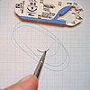

suturing

Definition: A surgical suture, also known as a stitch or stitches, is a medical device used to hold body tissues together and approximate wound edges after an injury or surgery. Application generally involves using a needle with an attached length of thread. There are numerous types of suture which differ by needle shape and size as well as thread material and characteristics. Selection of surgical suture should be determined by the characteristics and location of the wound or the specific body tissues being approximated.
Source: Wikipedia
Wikipedia Page (Something wrong with this association? Let us know.)
Wikidata Page (Something wrong with this association? Let us know.)